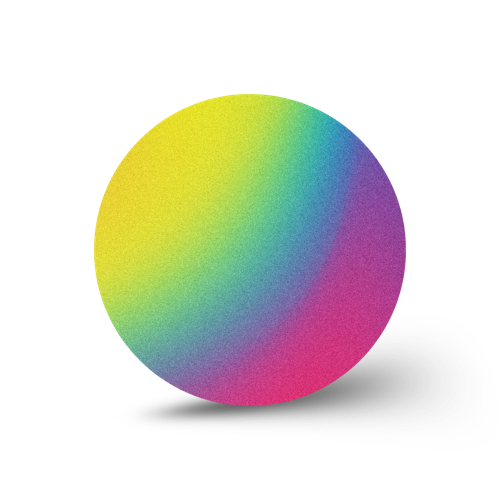

“Every Journey’s Companion,
Every Soul’s Completion.”
ทุกการเดินทางของทุกจิตวิญญาณล้วนมีจุดจบ
ผม ในฐานะเพื่อนร่วมทางคนนึง
อยากส่งต่อเรื่องราวการเติบโตของผม ทั้งภายนอก และภายใน
ช่วยเติมเต็มจิตวิญญาณ ของเพื่อนๆทุกคนครับ
ขอบคุณโชคชะตาที่ทำให้เราได้เดินทางมาเจอกัน ณ ปัจจุบัน
The Three Growths
เติบโตไปด้วยกัน ทั้งสามด้าน
เส้นทางของ Jovey แบ่งการเติบโตเป็นสามวง — กาย ใจ และจิตวิญญาณ
Personal Growth
พัฒนาตัวเองทีละก้าว ทั้งความคิด นิสัย และการงาน ให้ดีขึ้นกว่าเมื่อวาน
Spiritual Growth
เติมเต็มจิตวิญญาณ อยู่กับปัจจุบัน และเข้าใจตัวเองให้ลึกขึ้นในทุกวัน
Vitality Growth
ดูแลพลังกาย สุขภาพ และการพักผ่อน ให้สมดุลไปตลอดการเดินทาง
Our First Journey
MindSpend
แอปการเงินเพื่อนคู่ใจ — น้องมายด์จะอยู่ข้างๆ คุณ ช่วยให้ใช้จ่ายอย่างมีสติ ทีละก้าว ทีละบาท
เปิด MindSpend